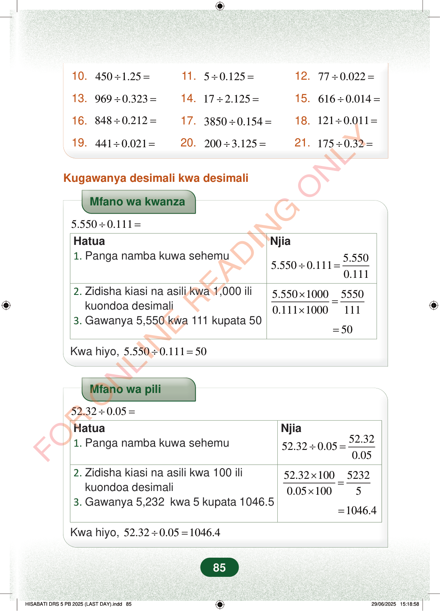

10.4501.25÷=11.50.125÷=12.770.022÷=13.9690.323÷=14.172.125÷=15.6160.014÷=16.8480.212÷=17.38500.154÷=18.1210.011÷=19.4410.021÷=20.2003.125÷=21.1750.32÷=Kugawanya desimali kwa desimaliMfano wa kwanza5.5500.111÷=Hatua1.Panga namba kuwa sehemuNjia5.5505.5500.1110.111÷=5.550100055500.1111000111×=×2.Zidisha kiasi na asili kwa 1,000 ilikuondoa desimali3.Gawanya 5,550 kwa 111 kupata 5050=Kwa hiyo,5.5500.11150÷=Mfano wa pili52.320.05÷=Hatua1.Panga namba kuwa sehemuNjia52.3252.320.050.05÷=52.3210052320.051005×=×2.Zidisha kiasi na asili kwa 100 ilikuondoa desimali3.Gawanya 5,232 kwa 5 kupata 1046.51046.4=Kwa hiyo,52.320.051046.4÷=85
10. 450 1.25 ÷ = 11. 5 0.125 ÷ = 12. 77 0.022 ÷ =
13. 969 0.323 ÷ = 14. 17 2.125 ÷ = 15. 616 0.014 ÷ =
16. 848 0.212 ÷ = 17. 3850 0.154 ÷ = 18. 121 0.011 ÷ =
19. 441 0.021 ÷ = 20. 200 3.125 ÷ = 21. 175 0.32 ÷ =
Kugawanya desimali kwa desimali
Mfano wa kwanza
5.550 0.111 ÷ =
Hatua 1. Panga namba kuwa sehemu Njia
5.550 5.550 0.111 0.111 ÷ =
5.550 1000 5550 0.111 1000 111 × = ×
2. Zidisha kiasi na asili kwa 1,000 ili kuondoa desimali 3. Gawanya 5,550 kwa 111 kupata 50
50 =
Kwa hiyo, 5.550 0.111 50 ÷ =
Mfano wa pili
52.32 0.05 ÷ =
Hatua 1. Panga namba kuwa sehemu Njia
52.32 52.32 0.05 0.05 ÷ =
52.32 100 5232 0.05 100 5 × = ×
2. Zidisha kiasi na asili kwa 100 ili kuondoa desimali 3. Gawanya 5,232 kwa 5 kupata 1046.5
1046.4 =
Kwa hiyo, 52.32 0.05 1046.4 ÷ =
85
Mazoezi ya 10 hadi 21 ya kugawanya namba za desimali, kama 450 ÷ 1.25, 5 ÷ 0.125, na 175 ÷ 0.32.Kugawanya desimali kwa desimaliMfano wa kwanza wa 5.550 ÷ 0.111. Hatua zinaonesha kuondoa desimali kwa kuzidisha kwa 1,000, kisha kugawanya 5550 kwa 111 kupata 50.Mfano wa pili wa 52.32 ÷ 0.05. Hatua zinaonesha kuzidisha kwa 100 kuondoa desimali, kisha kugawanya 5232 kwa 5 kupata 1046.4.